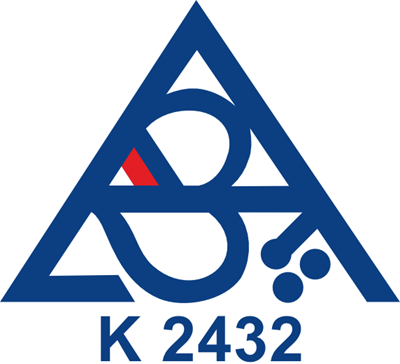
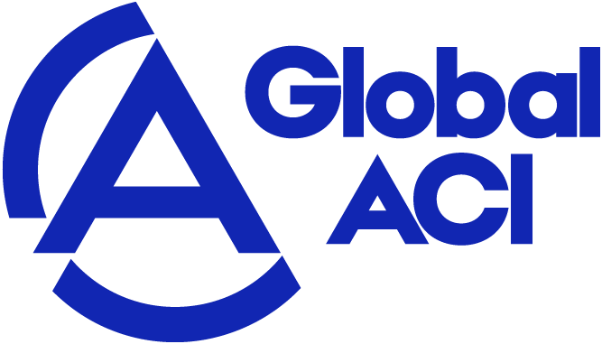

Přihlásit se
Získejte přístup k individuálním cenám a možnosti přímého nákupu.
Získejte přístup k individuálním cenám a možnosti přímého nákupu.
DATA ELEKTRONIK, spol. s r.o.
Kalibrační laboratoř č. 2432 akreditovaná Českým institutem pro akreditaci podle ČSN EN ISO/IEC 17025:2018. Kalibrujeme teplotu a vlhkost v laboratoři v Brně i přímo u vás v provozu — a rovnou provedeme i justáž měřidel.
Teplota
−40 až +180 °C
Relativní vlhkost
10 až 95 % RH
nejistota od 0,06 °C
nejistota od 0,06 °C
−40 až +180 °C10 až 95 % RHnejistota od 0,06 °C
Akreditovaná kalibrační laboratoř č. 2432


ČSN EN ISO/IEC17025:2018src/hero-slide.html — jako další <li> do <ul class="uk-slideshow-items"> v sekci section.slideshow na homepage.assets/css/hero-slide.css — přidat za hlavní CSS webu; všechny třídy mají předponu .kalt-.assets/img/znacky/ a ikony assets/icons/ — cesty upravit podle úložiště webu.